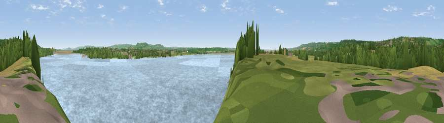

Viewpoint near Sharpness
#23703 in England · top 40% of its area beats it · near Sharpness · footpathWhere it is
The exact computed spot (SO 65525 02525). Click the marker for map links.
Public access: a public right of way passes within 22 m of this spot. Computed from Natural England's CRoW access layer and OpenStreetMap rights of way — not the legal definitive map. Always verify locally.
The view, rendered

A 360° render of this exact spot computed from the terrain model, tree cover and land cover — summer colours, afternoon light, calibrated against photographs of famous viewpoints. Real trees, hedges and buildings will differ in detail.
The panorama
Grey silhouette: terrain skyline in each direction (720 bearings, Earth curvature and refraction included). Dashed green: skyline with trees (+15 m) and buildings (+8 m) as obstacles. Blue strip: how far the ground is visible on each bearing.
Where the view opens
Wedge length = distance to the farthest visible ground on that bearing (vegetation-aware). Rings at 10, 25 and 50 km.
What fills the view
73% water · 11% woodland · 10% grassland · 5% cropland · 1% built-up
Angular shares of the visible panorama (visual magnitude), not map area. Landscape diversity 0.39 (0–1 Shannon).
Key numbers
More beautiful places nearby
The staircase of upgrades: each row has a higher view potential than everything closer. Driving times are estimates from straight-line distance, calibrated against real road routing — check an actual route before setting out.
| Place | Direction | Drive | Score |
|---|---|---|---|
| Viewpoint near Sharpness | SSW · 0 km | ~2 min | 50.2 |
| Viewpoint near Oldcroft | NNW · 3 km | ~7 min | 61.2 |
| Viewpoint near Viney | N · 4 km | ~9 min | 69.1 |
| Viewpoint near Yorkley | NNW · 5 km | ~10 min | 70.9 |
| Viewpoint near Stinchcombe | ESE · 9 km | ~18 min | 78.7 |
| Viewpoint near Stinchcombe | ESE · 9 km | ~18 min | 79.4 |
| Viewpoint near Stinchcombe | ESE · 9 km | ~18 min | 80.5 |
| Garway Hill | NW · 31 km | ~49 min | 84.6 |
51.72038, -2.50046 · source: screening · position refined by local search. Computed location — check access rights before visiting.